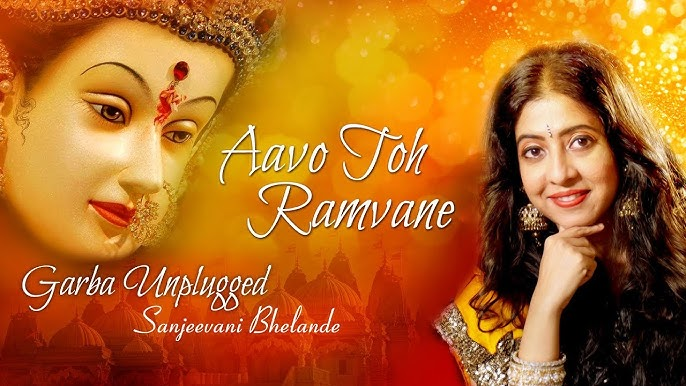
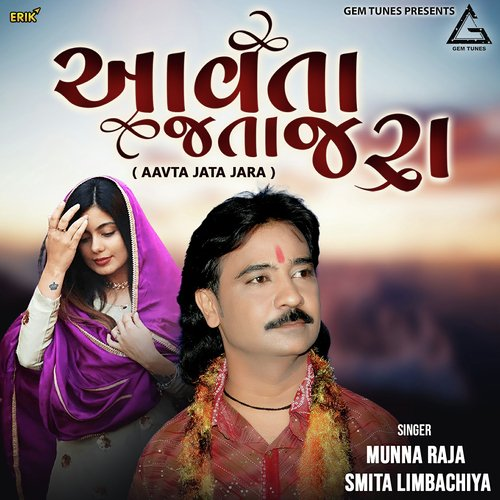
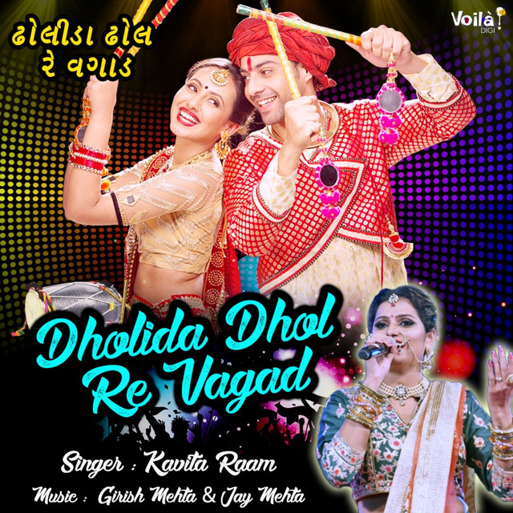
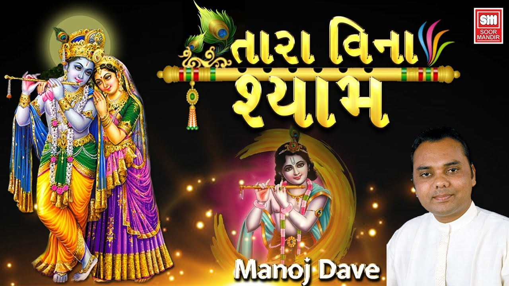
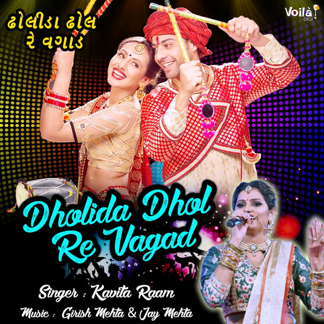
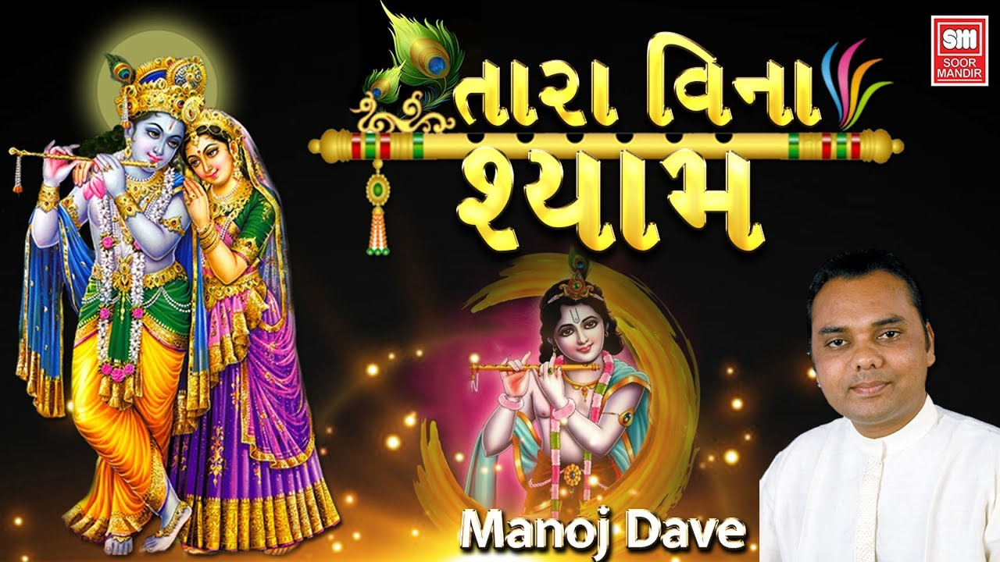
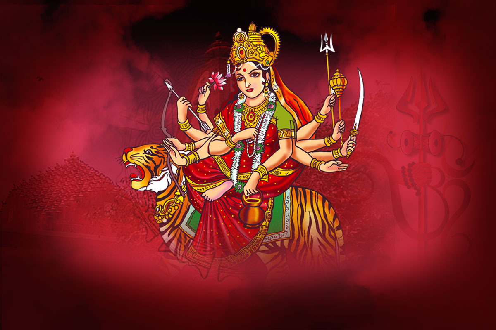
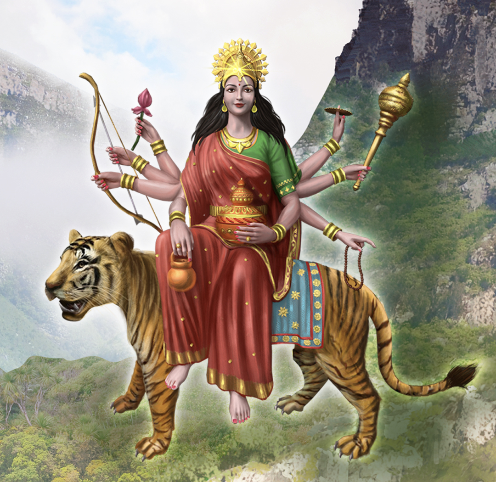

NAVRATRI SPECIAL - GARBA NI RAAT
Let the Dandiya Play – Navratri Audio Station


 



Nine Nights. One Spirit. Infinite Tunes.
Day 1: Maa Shailputri - The Himalayan Grace🌸

Day 2: Maa Brahmacharini - The Light of Tapasya🌸

Day 3: Maa Chandraghanta - The Warrior's Bell🌸

Day 4: Maa Kushmanda - The Cosmic Spark🌸

Day 5: Maa Skandmata - The Mother of Courage🌸

Day 6: Maa Katyayani - The Fierce Protector🌸

Day 7: Maa Kaalratri - The Himalayan Grace🌸
Day 8: Maa Mahagauri - The Radiant Purity🌸
Day 9: Maa Siddhidatri - The Granter of Siddhis🌸